【IT168 评测】随着轻薄笔记本以及平板电脑的普及，对于商务人士的每次出差的“旅行重量”得到了不少的减轻，但笔记本电脑或者平板这样的设备还是必不可少。随着手机性能越来越强大，不少手机都具备了PC模式，手机连接上底座提供视频输出功能，能实现类似电脑的桌面，能实现简单的PPT演示和简单的办公功能，但对于一些复杂的办公功能就不能实现了。那么，有更好的解决方案吗？
答案是肯定的，在荣耀V20上我们看到了一个非常有前瞻性的功能－－华为云电脑。华为云电脑虽然只是一个简单的手机APP，但背后却拥有非常强大的功能，基于华为云提供的高性能主机通过高速网络传输让手机上能实现一般Windows PC上的功能，当然，包括游戏功能。
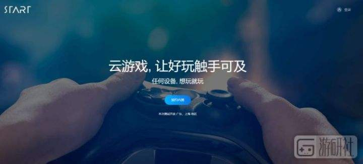
华为云电脑是华为手机依托于华为公有云桌面虚拟化功能将华为桌面云效力集成到平板和手机终端设备，面向消费者推出的一种全新云效力产品。发挥云端协同的优势，华为云电脑供应给终端用户一个便携的、可替代传统电脑的云端电脑效力。
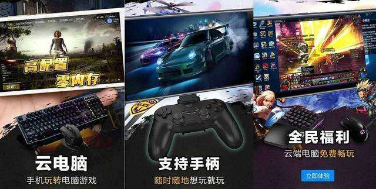
相对于传统的PC，华为云电脑无需任何的主机，一切都依赖华为云端的服务器，并且提供高可靠性，高便利度以及原生Windows体验的云端主机，基于Windows系统可以运行大部分的Windows应用。让用户不论身处何处，凭借华为手机可以随时随地接入云电脑，运用云上核算资源，让手机变成口袋里的笔记本电脑。
华为云电脑是需要购买服务的，而每个华为账号每天都有10分钟的体验时间，购买方式可以选择包月和购买时长，包月提供2档的商务办公配置，而购买时长提供了2档办公和2档游戏的配置，用户可以根据自己的需求进行购买。
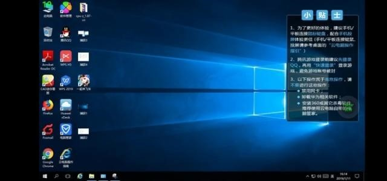
首先荣耀V20的华为云PC可以在手机模式下运行也可以在PC模式下运行，在手机模式下运行的体验没有PC模式下好，毕竟手机的屏幕相对较小，只能进行一些简单的操作。
PC模式下的华为云电脑就更像是一台普通的PC了，通过底座或者USB Type-C转换器可以让华为云PC显示到显示器上，连接上鼠标键盘就变成了一台电脑，组建起来相当简单。
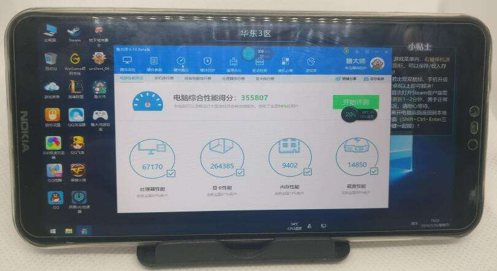
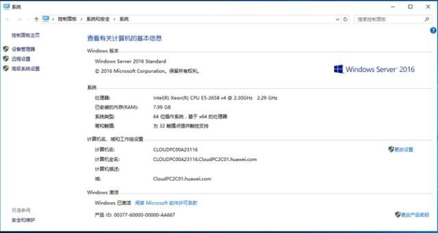
首先我们购买一个商务办公的主机，这个主机的配置并不差，使用Intel Xeon E5-2658 V4的处理器，分配4个核心（线程）和8GB的内存，对于商务办公来说这样的配置已经相当足够。
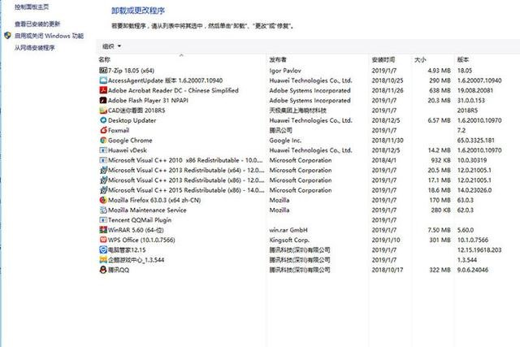
预装软件方面，这台主机已经预装了WPS Office还有CAD迷你看图、FoxMail等等的日常办公可能用到的软件，如果用户觉得软件不够还可以自己通过网络下载安装更多的软件。
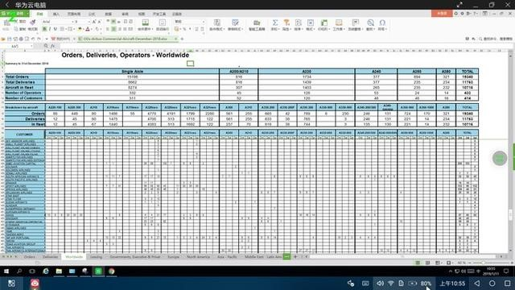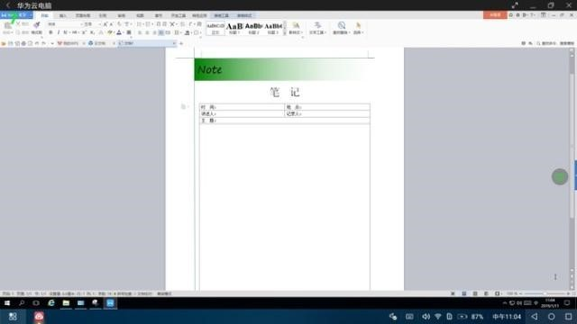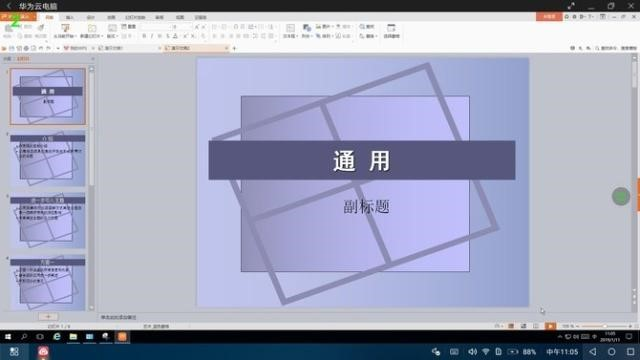 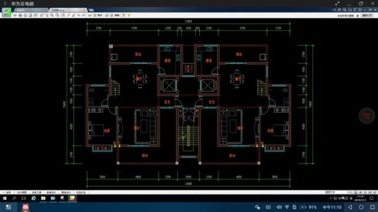
预装的WPS Office已经能满足一般文档编辑、表格编辑以及PPT等等的日常办公功能，不仅能展示PPT还可以编辑PPT，这是不少安卓手机的PC模式下所不能做到的。并且可以查看和简单编辑CAD图纸，这对于设计用户来所非常实用。操作流畅度方面还是可以接受，毕竟华为云电脑对于带宽和延时的要求比较高，建议采用10M以上的宽带会带来更流畅的体验。
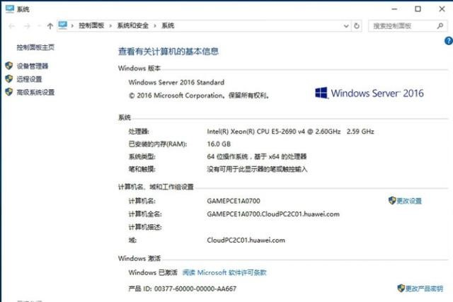 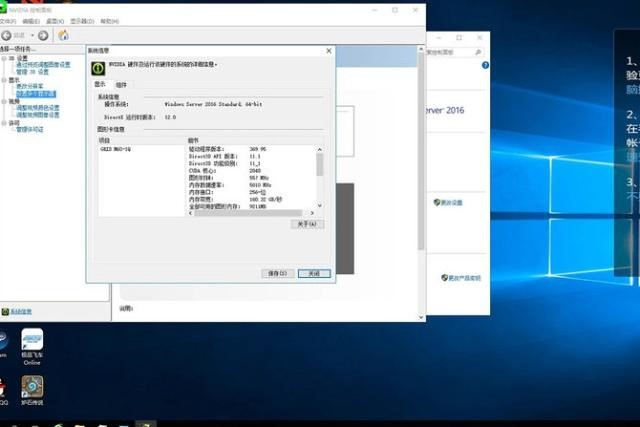
这个版本的云电脑配置更高了，配备了Intel Xeon E5-2690 V4的处理器，分配4个核心（线程），并且配备了16GB的大内存，更使用了NVIDIA的M60虚拟显卡为华为云电脑提供3D运算能力。
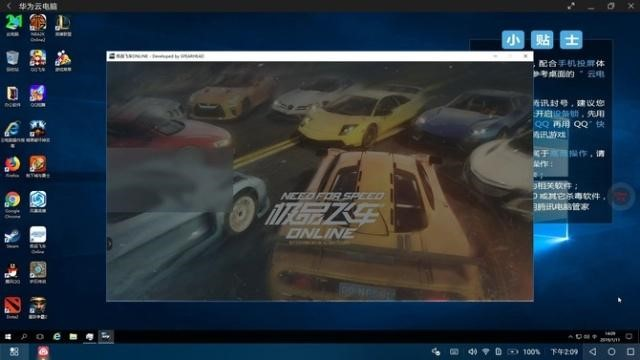 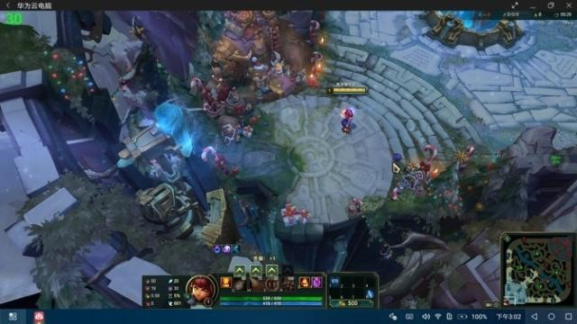
华为云电脑的游戏版也预装了几款游戏，并且内置了Steam，用户可以通过Steam购买和下载游戏。对于游戏的体验和真正的PC还是有一定差别，首先是对于网络带宽的要求更高，同时也要求延时更低，毕竟所有的游戏运算都是在云端完成。
用华为云电脑进行了英雄联盟的测试，首先可以肯定的是游戏是能玩，华为云电脑的性能是足够的，对于游戏体验影响最大的是网络带宽和延时，如果网络能保持一个较高的带宽可以确保游戏拥有高流畅度。
荣耀V20上的华为云电脑拥有非常高的实用性，特别是对于商务用户，可以将手机变成口袋里的笔记本电脑，通过云计算技术让商务用户的差旅办公变得更简单。华为云电脑也是一个非常有前瞻性的产品，随着5G网络的建设，我们也看到未来基于5G网络高带宽低延时的应用将会越来越多，而云计算在5G时代也将会有更好的发展。华为云电脑这个也是华为云计算服务的一部分，而这个云服务率先应用在荣耀V20上，也让荣耀V20提前拥有5G时代的新技术体验，虽然目前4G网络以及wifi对于云PC的支持还有些不足，但到了5G时代相信华为云电脑将会有更好的实用体验。